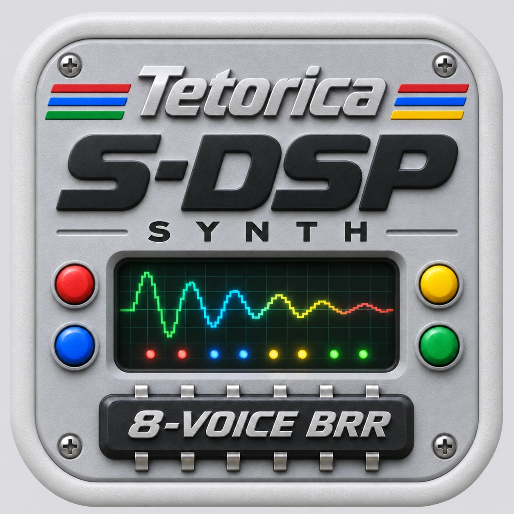

BRR · NOISE · ECHO / FIR · PMON
Tetorica S-DSP Synth
SNES · 8-voice sample sound · Draw a wave. Play with code.
Enable audio, then play the keyboard. Editing does not start audio.
Live output after Master volume.
Sound source
BRR · 8 hardware voices · round robin
Performance input
Every key plays the selected source.
Software performance · the same S-DSP APU as the controls above. Run: Ctrl/Cmd+Enter · Apply: Ctrl/Cmd+Shift+Enter.
Code is saved in Files. Loading a project never runs it automatically.
Console
?
Use const snes = await useSoundChip("snes"), then await snes.noteOn(CH1, "C4") and await snes.noteOff(CH1). Lanes 0–7 share the keyboard allocator and current Wave / BRR / Noise, PMON and Echo. CH1–CH6 alias lanes 0–5; use 6 and 7 for the final lanes. PMON uses two hardware voices per note. Run starts fresh; Apply keeps context and named loops. Stop releases Code notes and retains your instrument. This performance API differs from Playground's raw channel API.